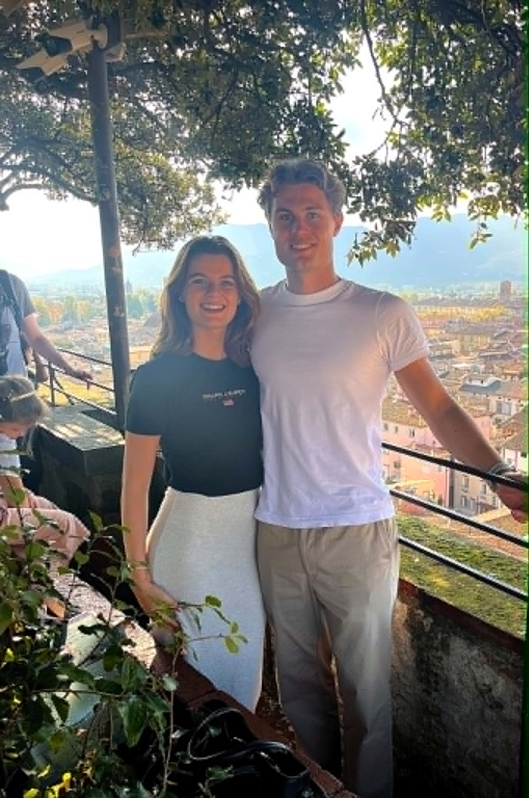

Vår historie


Sensommeren 2021 · Trondheim
Vi møttes sensommeren 2021, da Rikke flyttet til Trondheim for å begynne å studere, og Valdemar begynte sitt andre studieår. Begge hadde blitt valgt inn i Teknologiporten, et verv som jobber med å knytte studenter og næringslivet tettere sammen.
2022 · Trondheim
I starten av 2022 begynte vi å bli bedre kjent, og etter hvert utviklet det seg et godt vennskap. Vi ble begge valgt inn i styret i Teknologiporten og fant raskt tonen, ikke minst sammen med vår gode venn Einar. Vi tre ble en liten trio som tilbrakte stadig mer tid sammen. Høsten 2022 begynte vennskapet mellom oss to å utvikle seg til noe mer. Timingen var imidlertid ikke helt på vår side, og vi bestemte oss for å fortsette som venner.
2023 · Trondheim
Vennskapet vårt, og den lille trioen med Einar, holdt seg sterkt. 2023 fylte vi med mye fest, fyll og moro i Trondheim.
Høsten 2024 · Firenze
Høsten 2024 pakket trioen vår koffertene og flyttet sammen til Firenze for et år på utveksling. Her bodde vi i kollektiv med to andre nordmenn og fikk leve «la dolce vita» («det søte liv»).
Starten av 2025 · Annecy
Vi startet året 2025 med en roadtrip gjennom Europa sammen med Einar. På den aller siste kvelden av turen, i den idylliske franske byen Annecy, gikk vennskapet vårt over til litt mer enn vennskap. (At det var noe mer mellom oss enn bare vennskap, hadde ligget i luften lenge.)
Våren 2025 · Italia
Våren 2025 blomstret kjærligheten i Italia. Vi spiste utallige gode måltider, utforsket vakre italienske steder og nøt livet i Italia sammen. I begynnelsen av april gikk turen til Comosjøen. På den øverste balkongen i en nydelig villa, med utsikt over innsjøen og en vakker hage, spurte Valdemar om vi skulle bli kjærester.
Høsten 2025 · Trondheim
Høsten 2025 gikk turen tilbake til Trondheim for å fullføre studiene. Vi flyttet inn i en koselig liten leilighet ved Studentersamfundet, og hverdagen besto stort sett av skole, jobb, trening, god mat og hyggelige stunder med venner.
Sommeren 2026 · Asia
Tidlig sommer 2026 leverte vi masteroppgavene, pakket sekkene og satte kursen mot nye eventyr. De neste ni månedene tilbrakte vi på reise i Asia! Vi startet i Indonesia og fortsatte videre til Filippinene, Taiwan og Japan. Deretter ble det en liten avstikker til Singapore før turen gikk videre til Thailand. Julen feiret vi i Hongkong, og det nye året ønsket vi velkommen med reiser i Kina. Eventyret ble rundet av med to fantastiske måneder i Vietnam.
Våren 2027 · Oslo
Etter ni måneder med opplevelser, eventyr og utallige minner vendte vi til slutt hjem til Norge, denne gangen med Oslo som vår nye hjemby. Her startet et nytt kapittel med jobb og voksenliv. Valdemar begynte som Graduate Drilling and Wells Engineer i Aker BP, mens Rikke startet som [stilling] i Volve.
Nå gleder vi oss til å gifte oss, og ser virkelig frem til å feire kjærligheten og den store dagen sammen med dere!
Rikke & Valdemar